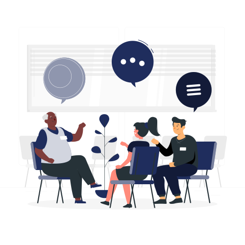

February 4, 2021
Is seeking therapy a weakness?
The mental health of workers around the globe has plummeted due mainly to the spread of Covid-19, remote working and a whole new way of living that requires social distancing.
A new SWNS research study, conducted by Onepoll on behalf of Vida Health, found that
more than one out of every six Americans started therapy for the first time in 2020. The study, surveying
2,000 adults in the United States, also reported that 31% either continued or returned to therapy in the
last year, 15% are taking some type of medication for their mental health for the first time, and another
15% changed or increased an existing prescription during that same time frame. After the January 6, 2021
insurrection on the Capitol, the numbers of Americans showing symptoms of post traumatic stress rose. And
the lurking dangers and turmoil in this country have led many workers to say, “Stay safe” to colleagues,
instead of “Goodbye” or “See you soon.” The belief that people who go for psychotherapy are weak, mentally
ill or crazy is a common, yet one of the biggest misconceptions about psychotherapy.
Nowadays, if you seek treatment, it’s viewed as a sign of resourcefulness. The average therapy client
struggles with many of the same problems we all struggle with on a daily basis: relationships, self-doubt,
confidence, self-esteem, work/life stress, life transitions, depression and anxiety. The preferred
designation for the person in therapy is “client,” not “patient,” for that very reason. Over my 25 years of
experience, I’ve often said that the folks I treat in therapy are mentally healthier than some people
walking the streets who fear the stigma of mental health counseling.